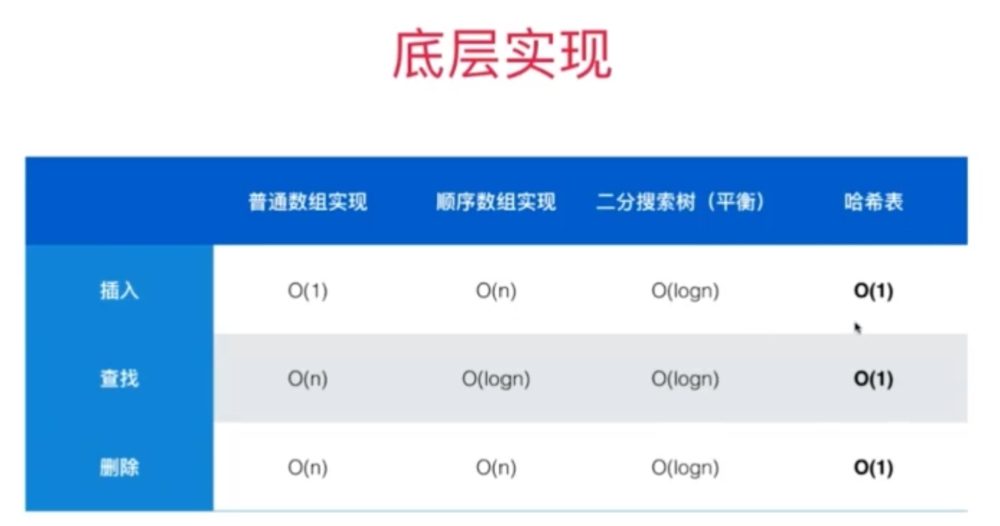
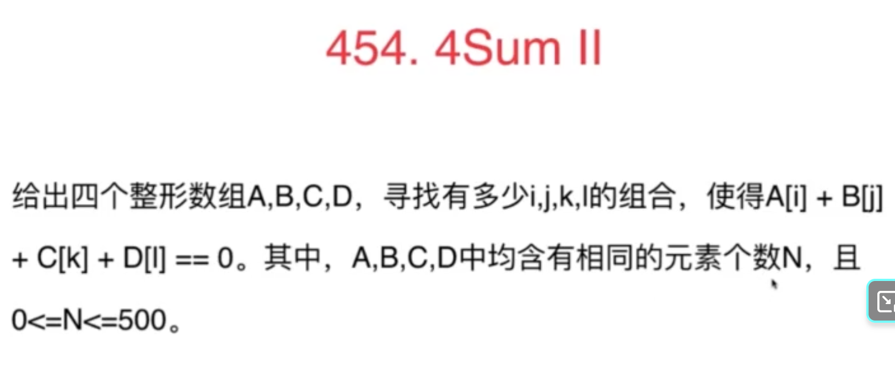
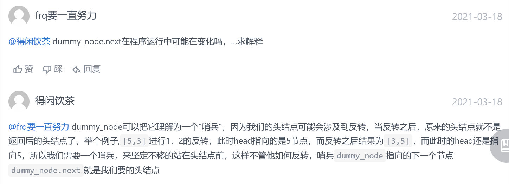
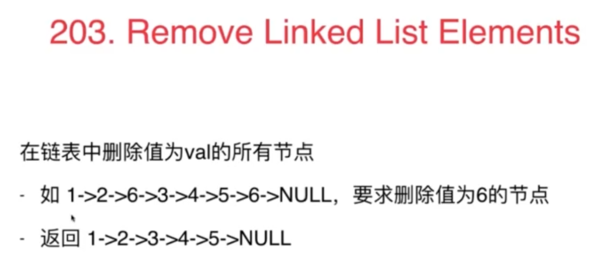
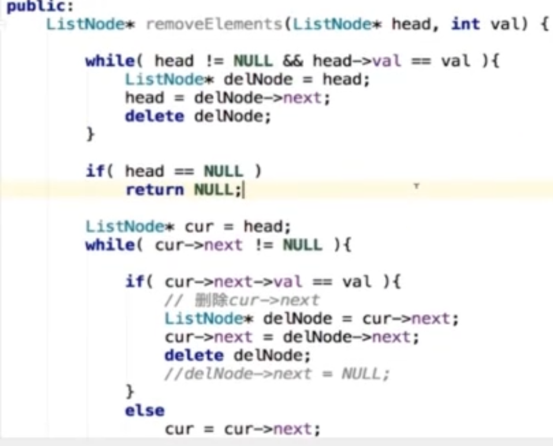
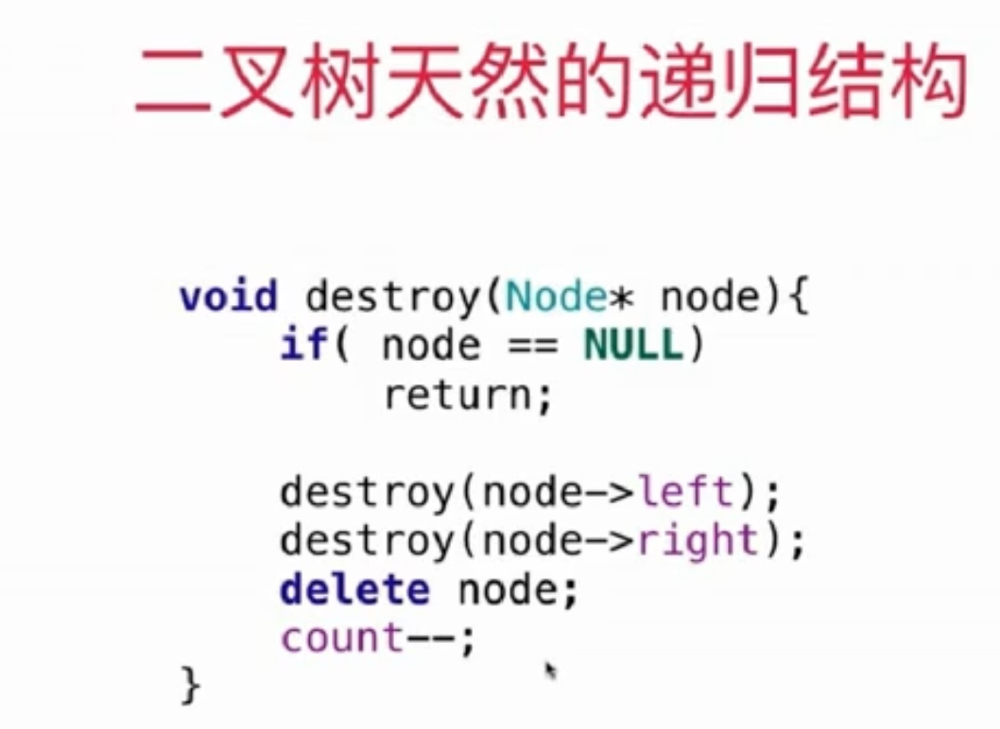
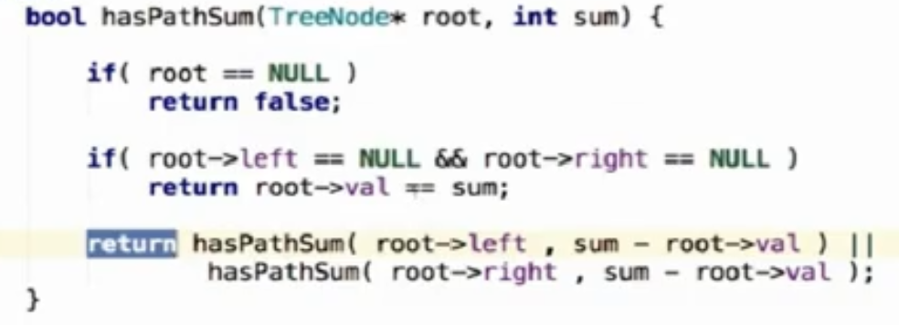

classSolution: defremoveElement(self, nums: List[int], val: int) -> int: i,j=0,0 while j<len(nums): if nums[j]!=val: nums[i]=nums[j] i+=1 j+=1 return i
时间复杂度：O(n)，其中 n 为序列的长度。我们只需要遍历该序列至多两次。
空间复杂度：O(1)。我们只需要常数的空间保存若干变量。
解法2：两个指针一个向右走，一个向左走
1 2 3 4 5 6 7 8 9 10
classSolution: defremoveElement(self, nums: List[int], val: int) -> int: i,j=0,len(nums)-1 while i<=j: if nums[i]==val: nums[i]=nums[j] j-=1 else: i+=1 return i
时间复杂度：O(n)，其中 n 为序列的长度。我们只需要遍历该序列至多一次。
空间复杂度：O(1)。我们只需要常数的空间保存若干变量。
我的解法：基于解法2，加入了判断j位置元素是否为val(内部while)，保证只做一次赋值操作。
1 2 3 4 5 6 7 8 9 10 11 12 13 14 15
classSolution: defremoveElement(self, nums: List[int], val: int) -> int: i,j=0,len(nums)-1 while i<=j:#j后面全是为val的 if nums[i]==val:#该处理了 if nums[j]!=val: nums[i]=nums[j] j-=1 i+=1#不加也能过，但是加了可以少判断一次 else: while i<=j and nums[j]==val: j-=1 else: i+=1 return i
classSolution: defremoveDuplicates(self, nums: List[int]) -> int: i,j=2,2#i指向下一个待补充的位置，j遍历 n=len(nums) while j<n: if nums[j]!=nums[i-2]:#必须是i-2！！！ nums[i]=nums[j] i+=1 j+=1 return i
第三方题解通用解法：拓展到了最多保留重复的k个数。
由于是保留 k 个相同数字，对于前 k 个数字，我们可以直接保留
对于后面的任意数字，能够保留的前提是：与当前写入的位置前面的第 k 个元素进行比较，不相同则保留
1 2 3 4 5 6 7 8 9 10
classSolution: defremoveDuplicates(self, nums: List[int]) -> int: defsolve(k): u = 0#u指向当前待处理元素位置 for x in nums: if u < k or nums[u - k] != x: nums[u] = x u += 1 return u return solve(2)
classSolution: defpartition(self,nums,left,right): pivot=right key=nums[pivot] while left < right: while left < right and nums[left]<=key: left+=1 while left < right and nums[right]>=key: right-=1 #到这里，nums[left]>pivot，nums[right]<pivot，所以接下来就需要交换一下这两者 nums[left],nums[right]=nums[right],nums[left] nums[left],nums[pivot]=key,nums[left]#必须是交换才可以！！！！ return left #普通快排，这里用不到 ，只是回顾一下 defquicksort(self,nums, left, right): if left < right: index = self.partition(nums, left, right) self.quicksort(nums, left, index-1) self.quicksort(nums, index+1, right)
#改编自quicksort deftopk_split(self,nums, k, left, right): #寻找到第k个数停止递归，使得nums数组中index左边是前k个小的数，index右边是后面n-k个大的数 if (left<right): index = self.partition(nums, left, right) print(index) if index==k: print('找到',index) return elif index < k: self.topk_split(nums, k, index+1, right) else: self.topk_split(nums, k, left, index-1)
defpartition(self,nums,left,right): pivot=left key=nums[pivot] while left < right: while left < right and nums[right]>=key: right-=1 while left < right and nums[left]<=key: left+=1 #到这里，nums[left]>key，nums[right]<key，所以接下来就需要交换一下这两者 nums[left],nums[right]=nums[right],nums[left] nums[left],nums[pivot]=key,nums[left]#必须是交换才可以！！！！ return left
方法2：堆排序
调包：
1 2 3 4 5 6 7 8 9
import heapq classSolution: deffindKthLargest(self, nums: List[int], k: int) -> int: maxHeap = [] for x in nums: heapq.heappush(maxHeap, -x) for _ inrange(k - 1): heapq.heappop(maxHeap) return -maxHeap[0]
classSolution: #原地堆排序 #最后一个非叶子节点的索引是(n-1)/2,(n-2)/2 ？都可以吧，前者多了一次不通过的判断 defheapSort(self,arr,n): #建堆，后续叶子节点已经是满足堆的定义了 for i inrange((n-2)//2,-1,-1): self.shiftdown(arr,n,i) #print(arr)#[999, 10, 9, 8, 2, 5, 1, 1, 4] #原地堆排序 for i inrange(n-1,-1,-1): arr[0],arr[i]=arr[i],arr[0] self.shiftdown(arr,i,0) #print(arr)#[1, 1, 2, 4, 5, 8, 9, 10, 999]
deffindKthLargest(self, nums: List[int], k: int) -> int: n = len(nums) #建堆 for i inrange((n-2)//2,-1,-1): self.shiftdown(nums,n,i) #求解 for i inrange(n-1,n-k,-1): nums[0], nums[i] = nums[i], nums[0] self.shiftdown(nums,i,0) return nums[0]#经过k-1次操作，此时堆顶就是第k大的数
defshiftdown(self,arr,n,k): #print(k) while2*k+1<n: j=2*k+1 if j+1<n and arr[j+1]>arr[j]: j+=1 if arr[k]>=arr[j]: break arr[k],arr[j]=arr[j],arr[k] k=j
classSolution: defisPalindrome(self, s: str) -> bool: ifnot s: returnTrue defcheck_valid(c): if c.isdigit() or c.isalpha(): returnTrue else: returnFalse n=len(s) i,j=0,n-1 while i<j: whilenot check_valid(s[i]) and i<j: i+=1 whilenot check_valid(s[j]) and i<j: j-=1 t1,t2=s[i],s[j] if t1.isalpha(): t1=t1.lower() if t2.isalpha(): t2=t2.lower() if i<j and t1!=t2: returnFalse i+=1 j-=1 returnTrue
直接对撞。
我的解法：对撞指针：
1 2 3 4 5 6 7 8 9 10 11 12 13 14 15 16
classSolution: defreverseVowels(self, s: str) -> str: n=len(s) lis=['a','e','i','o','u','A','E','I','O','U'] slis=[i for i in s] i=0 j=n-1 while i<j: while i<j and s[i] notin lis: i+=1 while i<j and s[j] notin lis: j-=1 slis[i],slis[j]=slis[j],slis[i] i+=1 j-=1 return''.join(slis)
还是对撞指针，理论证明略
1 2 3 4 5 6 7 8 9 10 11 12 13 14
classSolution: defmaxArea(self, height: List[int]) -> int: n=len(height) i,j=0,n-1 maxArea=0 while i<j: area=min(height[i],height[j])*(j-i) if area>maxArea: maxArea=area if height[i]<height[j]: i+=1 else: j-=1 return maxArea
classSolution: defminSubArrayLen(self, s: int, nums: List[int]) -> int: ifnot nums: return0 n = len(nums) ans = n + 1 for i inrange(n): total = 0 for j inrange(i, n): total += nums[j] if total >= s: ans = min(ans, j - i + 1) break return0if ans == n + 1else ans
classSolution: defminSubArrayLen(self, s: int, nums: List[int]) -> int: ifnot nums: return0 n = len(nums) res = n + 1 i,j = 0, -1#j从0开始会报错 sum = 0 while i < n: if j+1<n andsum<s: sum+=nums[j+1] j+=1 else: sum-=nums[i] i+=1 ifsum>=s: res=min(res,j-i+1) return0if res == n + 1else res
官方提供的Python版本
1 2 3 4 5 6 7 8 9 10 11 12 13 14 15 16 17 18
classSolution: defminSubArrayLen(self, s: int, nums: List[int]) -> int: ifnot nums: return0 n = len(nums) ans = n + 1 start, end = 0, 0 total = 0 while end < n: total += nums[end] while total >= s: ans = min(ans, end - start + 1) total -= nums[start] start += 1 end += 1 return0if ans == n + 1else ans
classSolution: deffindAnagrams(self, s: str, p: str) -> List[int]: n, m, res = len(s), len(p), [] if n < m: return res p_cnt = [0] * 26 s_cnt = [0] * 26
for i inrange(m): p_cnt[ord(p[i]) - ord('a')] += 1 left = 0 for right inrange(n): cur_right = ord(s[right]) - ord('a') s_cnt[cur_right] += 1 while s_cnt[cur_right] > p_cnt[cur_right]: cur_left = ord(s[left]) - ord('a') s_cnt[cur_left] -= 1 left += 1 if right - left + 1 == m: res.append(left) return res
#step2：定义长度为k+1的滑动窗口，判断窗口内是否存在两个取值相同的元素 start=0 for end inrange(len(nums)): #step3：更新需要维护的变量&判断是否满足题目条件 if nums[end] in record: returnTrue record.add(nums[end])
if end-start+1>=k+1:#长度大于k+1了 record.remove(nums[start])#删除最左边的元素 start+=1 returnFalse
第四章：查找问题
4-1set
我的解法，使用set
1 2 3 4 5 6 7 8
classSolution: defintersection(self, nums1: List[int], nums2: List[int]) -> List[int]: set1=set(nums1) record=set()#记录结果 for i in nums2: if i in set1: record.add(i) returnlist(record)
classSolution: defintersect(self, nums1, nums2): s1,s2=nums1,nums2 #保证s1长度大于等于s2长度 iflen(nums1)<len(nums2): s1=nums2 s2=nums1 dic={} for item in s1: if item notin dic: dic[item]=1 else: dic[item]+=1 res=[] for item in s2: if item in dic.keys() and dic[item]>0: res.append(item) dic[item]-=1 return res
4-3
 哈希表很牛，但元素是无序的。
因此，二分搜索树可以解决类似下面的有序问题，而哈希表不能：
课后习题：
我的解法，使用dict
1 2 3 4 5 6 7 8 9 10 11 12 13 14 15 16 17 18
classSolution: defisAnagram(self, s: str, t: str) -> bool: s1,s2=s,t iflen(s1)!=len(s2): returnFalse dic={} for item in s1: if item notin dic: dic[item]=1 else: dic[item]+=1 for item in s2: if item in dic and dic[item]>0: dic[item]-=1 else: returnFalse returnTrue
for ch,word inzip(pattern,words): #当前word是word2ch的key，但是对应value不是当前ch #or 当前ch是ch2word的key，但是对应value不是当前word if (word in word2ch and word2ch[word] !=ch) or (ch in ch2word and ch2word[ch]!=word): returnFalse
classSolution: defisIsomorphic(self, s: str, t: str) -> bool: s2t,t2s={},{} for i ,j inzip(s,t): if (i in s2t and s2t[i]!=j) or (j in t2s and t2s[j]!=i): returnFalse s2t[i]=j t2s[j]=i returnTrue
classSolution: defisIsomorphic(self, s, t): n=len(s) s_dic={} t_dic={} for i inrange(n): #当前的映射值是否相同 if s_dic.get(s[i],0)!=t_dic.get(t[i],0): returnFalse #此时相等（都出现过 or 都没出现过） #若都没出现过，则加入字典里，否则什么都不做 if s[i] notin s_dic: s_dic[s[i]]=i+1 t_dic[t[i]]=i+1
returnTrue
这种思想其实可以直调用Python的index：
1 2 3 4 5 6 7 8
classSolution: defisIsomorphic(self, s, t): for i inrange(len(s)): if s.index(s[i]) != t.index(t[i]):
returnFalse returnTrue
我的解法：哈希表(字典排序)：
1 2 3 4 5 6 7 8 9 10 11 12 13 14 15 16 17 18 19
classSolution: deffrequencySort(self, s: str) -> str: dic={} #将每个字符的出现频次存入哈希表 for le in s: if le notin dic: dic[le]=1 else: dic[le]+=1
for k,v in lis: for _ inrange(v): res.append(k) return''.join(res)
时间复杂度：O(n+klogk)
O(n + k log k)，其中 n 是字符串 s 的长度，k是字符串 s 包含的不同字符的个数
遍历字符串统计每个字符出现的频率需要 O(n)的时间。 将字符按照出现频率排序需要 O(klogk) 的时间。 生成排序后的字符串，需要遍历 k 个不同字符，需要 O(k)的时间，拼接字符串需要 O(n)的时间。
空间复杂度：O(n+k)，其中 n 是字符串 s 的长度，k 是字符串 s 包含的不同字符的个数。空间复杂度主要取决于哈希表、列表和生成的排序后的字符串。
4-4
官方Python版本：
1 2 3 4 5 6 7 8
classSolution: deftwoSum(self, nums: List[int], target: int) -> List[int]: hashtable = dict() for i, num inenumerate(nums): if target - num in hashtable: return [hashtable[target - num], i] hashtable[nums[i]] = i return []
classSolution: defthreeSum(self, nums: List[int]) -> List[List[int]]: n = len(nums) nums.sort() ans = list() # 枚举 a for first inrange(n): # 需要和上一次枚举的数不相同 if first > 0and nums[first] == nums[first - 1]: continue # c 对应的指针初始指向数组的最右端 third = n - 1 target = -nums[first] # 枚举 b for second inrange(first + 1, n): # 需要和上一次枚举的数不相同 if second > first + 1and nums[second] == nums[second - 1]: continue # 需要保证 b 的指针在 c 的指针的左侧 while second < third and nums[second] + nums[third] > target: third -= 1 # 如果指针重合，随着 b 后续的增加 # 就不会有满足 a+b+c=0 并且 b<c 的 c 了，可以退出循环 if second == third: break if nums[second] + nums[third] == target: ans.append([nums[first], nums[second], nums[third]]) return ans
for i inrange(n): L=i+1 R=n-1 while(L<R): if(abs(nums[i]+nums[L]+nums[R]-target)<res): ret=nums[i]+nums[L]+nums[R]#三数之和 res=abs(ret-target) #因为有序 if nums[i]+nums[L]+nums[R]<target: L=L+1 else: R=R-1 return ret
for i inrange(n): L=i+1 R=n-1 while(L<R): if(abs(nums[i]+nums[L]+nums[R]-target)<res): ret=nums[i]+nums[L]+nums[R]#三数之和 res=abs(ret-target) #因为有序 if nums[i]+nums[L]+nums[R]<target: L=L+1 elif nums[i]+nums[L]+nums[R]>target: R=R-1 else: return nums[i]+nums[L]+nums[R] return ret
4-5

我写的Python版本答案：
1 2 3 4 5 6 7 8 9 10 11 12 13 14 15 16
classSolution: deffourSumCount(self, nums1: List[int], nums2: List[int], nums3: List[int], nums4: List[int]) -> int: dic=dict() for a in nums3: for b in nums4: if a+b notin dic: dic[a+b]=1 else: dic[a+b]+=1 cnt=0 for i inrange(len(nums1)): for j inrange(len(nums2)): if (-nums1[i]-nums2[j]) in dic: cnt+=dic[-nums1[i]-nums2[j]] return cnt
官方代码更简洁，思想一样：
1 2 3 4 5 6 7 8 9
classSolution: deffourSumCount(self, A: List[int], B: List[int], C: List[int], D: List[int]) -> int: countAB = collections.Counter(u + v for u in A for v in B) ans = 0 for u in C: for v in D: if -u - v in countAB: ans += countAB[-u - v] return ans
for st in strs: counts = [0] * 26 for ch in st: counts[ord(ch) - ord("a")] += 1 # 需要将 list 转换成 tuple 才能进行哈希,list is not hashable! mp[tuple(counts)].append(st) print(mp) returnlist(mp.values())
classSolution: defnumberOfBoomerangs(self, points: List[List[int]]) -> int: n=len(points) res=0 defcal_dist(i,j): return (points[i][0]-points[j][0])**2+(points[i][1]-points[j][1])**2 for i inrange(n): dic=dict() for j inrange(n): if j!=i:#可不要 dis=cal_dist(i,j) if dis notin dic: dic[dis]=1 else: dic[dis]+=1 for k,v in dic.items(): if v>=2: res+=v*(v-1) return res
时间复杂度：O(n^2)，其中 n 是数组长度
空间复杂度：O(n)
同样的思路，官方使用了defaultdict，使得代码更简单：
1 2 3 4 5 6 7 8 9 10 11
classSolution: defnumberOfBoomerangs(self, points: List[List[int]]) -> int: ans = 0 for p in points: cnt = defaultdict(int) for q in points: dis = (p[0] - q[0]) * (p[0] - q[0]) + (p[1] - q[1]) * (p[1] - q[1]) cnt[dis] += 1 for m in cnt.values(): ans += m * (m - 1) return ans
# 计算小数部分 for i inrange(accuracy): dividend = remainder * 10 res += str(round(dividend // divisor)) remainder = dividend % divisor
return res
# k = (y2 - y1) / (x2 - x1), b = y - k * x ans = 1 for i inrange(len(points)): d = Counter() for j inrange(i+1, len(points)): ifnot points[j][0] - points[i][0]: k = inf else: k = hdiv(points[j][1] - points[i][1],points[j][0] - points[i][0],10) d[k] += 1 if d: ans = max(ans, max(d.values()) + 1) return ans
不用gcd得代码也能过：
1 2 3 4 5 6 7 8 9 10
classSolution: defmaxPoints(self, points: List[List[int]]) -> int: ans = 1 for i inrange(len(points) - 1): curr = Counter() for j inrange(i+1, len(points)): dx, dy = points[j][0] - points[i][0], points[j][1] - points[i][1] curr[dy / dx if dx else inf] += 1 ans = max(ans, max(curr.values()) + 1) return ans
classSolution: defcontainsNearbyDuplicate(self, nums: List[int], k: int) -> bool: record=set()#长度最多为k的哈希表 n=len(nums) for i inrange(n): if nums[i] in record: returnTrue record.add(nums[i])
#step2：定义长度为k+1的滑动窗口，判断窗口内是否存在两个取值相同的元素 start=0 for end inrange(len(nums)): #step3：更新需要维护的变量&判断是否满足题目条件 if nums[end] in record: returnTrue record.add(nums[end])
if end-start+1>=k+1:#长度大于k+1了 record.remove(nums[start])#删除最左边的元素 start+=1 returnFalse
课后习题
本节题目的简化版本，我写的Python代码如下：
1 2 3 4 5 6 7 8 9
classSolution: defcontainsDuplicate(self, nums: List[int]) -> bool: record=set() n=len(nums) for i inrange(n): if nums[i] in record: returnTrue record.add(nums[i]) returnFalse
也可以排序，贴个官方代码：
1 2 3 4 5 6 7 8 9 10 11 12 13
classSolution { public: boolcontainsDuplicate(vector<int>& nums){ sort(nums.begin(), nums.end()); int n = nums.size(); for (int i = 0; i < n - 1; i++) { if (nums[i] == nums[i + 1]) { returntrue; } } returnfalse; } };
classSolution: defcontainsNearbyAlmostDuplicate(self, nums: List[int], k: int, t: int) -> bool: #record=set()#长度最多为k的哈希表 from sortedcontainers import SortedSet record=SortedSet()#有序集合 n=len(nums) for i inrange(n): #lis=[x for x in record if x>=nums[i]-t] #if len(lis)>0: # temp=min(lis) #else: # temp=None #print(temp)
##查找第一个大于等于num-t的数的位置 index = record.bisect_left(nums[i] - t)
if index<len(record) and record[index]<=nums[i]+t: returnTrue
#开始反转 defreverse_linked_list(head: ListNode): # 也可以使用递归反转一个链表 pre = None cur = head while cur: next = cur.next cur.next = pre pre = cur cur = next reverse_linked_list(tou)
#最后再连接起来 a.next=wei tou.next=suc
return dummy_node.next
时间复杂度：O(N)，其中 NNN 是链表总节点数。最坏情况下，需要遍历整个链表。
空间复杂度：O(1)。只使用到常数个变量。
关于加了个头节点的解释：

方法2：一次遍历「穿针引线」反转链表（头插法）
方法一的缺点是：如果 left 和 right 的区域很大，恰好是链表的头节点和尾节点时，找到 left 和 right 需要遍历一次，反转它们之间的链表还需要遍历一次，虽然总的时间复杂度为 O(N)，但遍历了链表 2 次，可不可以只遍历一次呢？答案是可以的。
整体思想是：在需要反转的区间里，每遍历到一个节点，让这个新节点来到反转部分的起始位置.
1 2 3 4 5 6 7 8 9 10 11 12 13 14 15 16
classSolution: defreverseBetween(self, head: ListNode, left: int, right: int) -> ListNode: # 设置 dummyNode 是这一类问题的一般做法 dummy_node = ListNode(-1) dummy_node.next = head pre = dummy_node for _ inrange(left - 1): pre = pre.next
cur = pre.next for _ inrange(right - left): next = cur.next cur.next = next.next next.next = pre.next pre.next = next return dummy_node.next
5-2
介绍了一些链表的相关操作
课后习题
1 2 3 4 5 6 7 8 9 10 11 12 13 14 15 16
# Definition for singly-linked list. # class ListNode: # def __init__(self, val=0, next=None): # self.val = val # self.next = next classSolution: defdeleteDuplicates(self, head: ListNode) -> ListNode: ifnot head: return head p=head while p.next: if p.val ==p.next.val: p.next=p.next.next else: p=p.next return head
# Definition for singly-linked list. # class ListNode: # def __init__(self, val=0, next=None): # self.val = val # self.next = next classSolution: defaddTwoNumbers(self, l1: ListNode, l2: ListNode) -> ListNode: if l1 == None: return l2 if l2 == None: return l1
dummy=ListNode(0) p=dummy carry=0#进位
while l1 and l2: p.next=ListNode((l1.val+l2.val+carry)%10) carry=(l1.val+l2.val+carry)//10#更新进位，取值为0或者一个0到9的数字 l1=l1.next l2=l2.next p=p.next if l2: while l2: p.next=ListNode((l2.val+carry)%10) carry=(l2.val+carry)//10#更新进位，取值为0或者一个0到9的数字 l2=l2.next p=p.next if l1: while l1: p.next=ListNode((l1.val+carry)%10) carry=(l1.val+carry)//10#更新进位，取值为0或者一个0到9的数字 l1=l1.next p=p.next
if carry !=0:#if carry==1 p.next=ListNode(carry) return dummy.next
# Definition for singly-linked list. # class ListNode: # def __init__(self, val=0, next=None): # self.val = val # self.next = next classSolution: defaddTwoNumbers(self, l1: ListNode, l2: ListNode) -> ListNode: s1, s2 = [], [] while l1: s1.append(l1.val) l1 = l1.next while l2: s2.append(l2.val) l2 = l2.next ans = None carry = 0 while s1 or s2 or carry != 0: a = 0ifnot s1 else s1.pop() b = 0ifnot s2 else s2.pop() cur = a + b + carry carry = cur // 10 cur %= 10 #头插 curnode = ListNode(cur) curnode.next = ans ans = curnode return ans
5-3

不设虚拟头节点：需要单独对第一个节点进行处理 
设置虚拟头节点：方便，统一
Python版本：
1 2 3 4 5 6 7 8 9 10 11 12 13 14 15
# Definition for singly-linked list. # class ListNode: # def __init__(self, val=0, next=None): # self.val = val # self.next = next classSolution: defremoveElements(self, head: ListNode, val: int) -> ListNode: dumyHead=ListNode(111,head) p=dumyHead while p.next: if p.next.val==val: p.next=p.next.next else: p=p.next return dumyHead.next
# Definition for singly-linked list. # class ListNode: # def __init__(self, val=0, next=None): # self.val = val # self.next = next classSolution: defreorderList(self, head: ListNode) -> None: """ Do not return anything, modify head in-place instead. """ ifnot head ornot head.next: return head
#1. 先找到链表的中间结点 slow=head fast=head.next
while fast and fast.next: fast=fast.next.next slow=slow.next #2. 中点前后切成两段子链表 part2Head=slow.next slow.next=None
pre=cur cur=next return pre part2Head=reverseList(p) #4. 开一个新的结点，每一次分别从两个子链表中摘取第一个结点 newHead=ListNode() p=newHead #奇数个结点时，第一段会多剩一个结点，直接连过去就好了 while head or part2Head: if head: p.next=head head=head.next p=p.next if part2Head: p.next=part2Head part2Head=part2Head.next p=p.next return newHead.next
pre=cur cur=next return pre part2Head=reverseList(p)
#4. 两段链表逐个元素比较 #即使结点个数为奇数也没关系，用and，忽略剩余的一个元素即可 while head and part2Head: if head.val!=part2Head.val: returnFalse head=head.next part2Head=part2Head.next returnTrue
classSolution: defsimplifyPath(self, path): stack = [] all_chs=path.split('/') for p in all_chs: if stack and p == '..': stack.pop() elif p notin" ..": stack.append(p) return'/' + '/'.join(stack)
split妙啊~~
6-2
栈与递归。
以二叉树的遍历为例：
递归需要系统栈。
可以手动栈代替系统栈，将递归转为非递归。
6-3
非递归实现二叉树遍历。
用栈。
1. 前序遍历
递归：
1 2 3 4 5 6 7 8 9 10 11 12 13 14 15 16 17
# Definition for a binary tree node. # class TreeNode: # def __init__(self, val=0, left=None, right=None): # self.val = val # self.left = left # self.right = right classSolution: defpreorderTraversal(self, root: TreeNode) -> List[int]: res=[] deff(root): if root: res.append(root.val) f(root.left) f(root.right) f(root) return res
# Definition for a binary tree node. # class TreeNode: # def __init__(self, val=0, left=None, right=None): # self.val = val # self.left = left # self.right = right classSolution: defpreorderTraversal(self, root: TreeNode) -> List[int]: ifnot root: return [] stack=[root] res=[] while stack: node=stack.pop() if node: res.append(node.val) if node.right: stack.append(node.right) if node.left: stack.append(node.left) return res
# Definition for a binary tree node. # class TreeNode: # def __init__(self, val=0, left=None, right=None): # self.val = val # self.left = left # self.right = right classSolution: defpreorderTraversal(self, root: TreeNode) -> List[int]: res=[] stack=[]
while root: res.append(root.val) stack.append(root) root=root.left
while stack: t=stack.pop() r=t.right while r: res.append(r.val) stack.append(r) r=r.left return res
2. 中序遍历
递归：
1 2 3 4 5 6 7 8 9 10 11 12 13 14 15 16
# Definition for a binary tree node. # class TreeNode: # def __init__(self, val=0, left=None, right=None): # self.val = val # self.left = left # self.right = right classSolution: definorderTraversal(self, root: TreeNode) -> List[int]: res=[] deff(root): if root: f(root.left) res.append(root.val) f(root.right) f(root) return res
# Definition for a binary tree node. # class TreeNode: # def __init__(self, val=0, left=None, right=None): # self.val = val # self.left = left # self.right = right classSolution: definorderTraversal(self, root: TreeNode) -> List[int]: res=[] stack=[]
while root:
stack.append(root) root=root.left
while stack: t=stack.pop() res.append(t.val)#访问 r=t.right while r: stack.append(r) r=r.left return res
3. 后序遍历
递归：
1 2 3 4 5 6 7 8 9 10 11 12 13 14 15 16
# Definition for a binary tree node. # class TreeNode: # def __init__(self, val=0, left=None, right=None): # self.val = val # self.left = left # self.right = right classSolution: defpostorderTraversal(self, root: TreeNode) -> List[int]: res=[] deff(root): if root: f(root.left) f(root.right) res.append(root.val) f(root) return res
# """ # This is the interface that allows for creating nested lists. # You should not implement it, or speculate about its implementation # """ #class NestedInteger: # def isInteger(self) -> bool: # """ # @return True if this NestedInteger holds a single integer, rather than a nested list. # """ # # def getInteger(self) -> int: # """ # @return the single integer that this NestedInteger holds, if it holds a single integer # Return None if this NestedInteger holds a nested list # """ # # def getList(self) -> [NestedInteger]: # """ # @return the nested list that this NestedInteger holds, if it holds a nested list # Return None if this NestedInteger holds a single integer # """
classNestedIterator(object):
def__init__(self, nestedList): self.stack = [] for i inrange(len(nestedList) - 1, -1, -1): self.stack.append(nestedList[i])
defnext(self): cur = self.stack.pop() return cur.getInteger()
defhasNext(self): while self.stack: cur = self.stack[-1] if cur.isInteger(): returnTrue self.stack.pop() for i inrange(len(cur.getList()) - 1, -1, -1): self.stack.append(cur.getList()[i]) returnFalse
# Your NestedIterator object will be instantiated and called as such: # i, v = NestedIterator(nestedList), [] # while i.hasNext(): v.append(i.next())
# Definition for a binary tree node. # class TreeNode: # def __init__(self, val=0, left=None, right=None): # self.val = val # self.left = left # self.right = right # Definition for a binary tree node. # class TreeNode(object): # def __init__(self, x): # self.val = x # self.left = None # self.right = None
classSolution(object): deflevelOrder(self, root): """ :type root: TreeNode :rtype: List[List[int]] """ queue = collections.deque() queue.append(root) res = [] while queue: size = len(queue) level = [] for _ inrange(size): cur = queue.popleft() #不能删！！因为加入的可能是None，也就是左or右孩子为空也加入了 #还有，也处理了本身root就是空的情况 ifnot cur: continue level.append(cur.val) queue.append(cur.left) queue.append(cur.right) if level: res.append(level) return res
# Definition for a binary tree node. # class TreeNode: # def __init__(self, val=0, left=None, right=None): # self.val = val # self.left = left # self.right = right # Definition for a binary tree node. # class TreeNode(object): # def __init__(self, x): # self.val = x # self.left = None # self.right = None
classSolution(object): deflevelOrder(self, root): """ :type root: TreeNode :rtype: List[List[int]] """ ifnot root: return [] queue = collections.deque() queue.append(root) res = [] while queue: size = len(queue) level = [] for _ inrange(size): cur = queue.popleft() level.append(cur.val) if cur.left: queue.append(cur.left) if cur.right: queue.append(cur.right) if level: res.append(level) return res
# Definition for a binary tree node. # class TreeNode: # def __init__(self, val=0, left=None, right=None): # self.val = val # self.left = left # self.right = right classSolution: defrightSideView(self, root: TreeNode) -> List[int]: ifnot root: return [] queue = collections.deque() queue.append(root) res = [] while queue: size = len(queue) level = [] for _ inrange(size): cur = queue.popleft() level.append(cur.val) if cur.left: queue.append(cur.left) if cur.right: queue.append(cur.right) if level: res.append(level[-1]) return res
6-5（好难哦）
队列。
(无权)图的BFS。
评论区Python版本：
1 2 3 4 5 6 7 8 9 10 11 12 13 14 15 16 17 18 19
classSolution: defnumSquares(self, n: int) -> int: from collections import deque deq=deque() visited=set() deq.append((n,0)) while deq: number,step=deq.popleft() targets=[number-i*i for i inrange(1,int(number**0.5)+1)] for target in targets: #由于只遍历到(number**0.5)，因此target不可能为负数，因此下面这个判断可省略 #if target<0: # break if target==0:return step+1 #这个if相当于剪枝 if target notin visited: deq.append((target,step+1)) visited.add(target)
# Definition for singly-linked list. # class ListNode: # def __init__(self, val=0, next=None): # self.val = val # self.next = next # Definition for singly-linked list. # class ListNode: # def __init__(self, x): # self.val = x # self.next = None
classSolution: defmergeKLists(self, lists: List[ListNode]) -> ListNode: ifnot lists orlen(lists) == 0: returnNone import heapq all_vals = [] for l in lists: while l: all_vals.append(l.val) l = l.next all_vals.sort() dummy = ListNode(None) cur = dummy for i in all_vals: temp_node = ListNode(i) cur.next = temp_node cur = temp_node
return dummy.next
第七章：递归
7-1

Python版本：
1 2 3 4 5 6 7 8 9 10 11 12 13
# Definition for a binary tree node. # class TreeNode: # def __init__(self, val=0, left=None, right=None): # self.val = val # self.left = left # self.right = right classSolution: defmaxDepth(self, root: TreeNode) -> int: if root isNone: return0 left_maxdepth=self.maxDepth(root.left) right_maxdepth=self.maxDepth(root.right) return1+max(left_maxdepth,right_maxdepth)
# Definition for a binary tree node. # class TreeNode: # def __init__(self, val=0, left=None, right=None): # self.val = val # self.left = left # self.right = right classSolution: defisBalanced(self, root: TreeNode) -> bool: return self.recur(root) != -1
defrecur(self, root): ifnot root: return0 #左子树深度 left = self.recur(root.left) if left == -1: return -1 #右子树深度 right = self.recur(root.right) if right == -1: return -1
# Definition for a binary tree node. # class TreeNode: # def __init__(self, val=0, left=None, right=None): # self.val = val # self.left = left # self.right = right classSolution: #利用：根结点的深度为1，满二叉树的结点数公式：2^满二叉树数深度-1 defcountNodes(self, root: TreeNode) -> int: ifnot root: return0 left = root.left right = root.right
rightHeight = 0 leftHeight=0
#以下求树的深度用到了完全二叉树的性质 while left: #求左子树深度 left = left.left leftHeight += 1 while right: #求右子树深度 right = right.right rightHeight += 1 print(leftHeight,rightHeight) """ 2 1 1 1 1 0 0 0 """ #如果左右子树的深度相等，则说明以该结点为根的子树是一棵满二叉树 #此时直接用2^树深度-1求解子树结点个数即可 if leftHeight == rightHeight: print('dd',leftHeight) return (2**(leftHeight+1)) - 1#加1是因为这里的height是子树的深度，而我们需要得到有根结点的树的深度，所以深度加1 return self.countNodes(root.left) + self.countNodes(root.right) + 1
时间复杂度：O(logn * logn)，比O(n)快很多~
空间复杂度：O(logn)
我只能膜拜了，大佬太强了~~
7-3
注意递归终止条件。

Python版本：
1 2 3 4 5 6 7 8 9 10 11 12 13 14 15
# Definition for a binary tree node. # class TreeNode: # def __init__(self, val=0, left=None, right=None): # self.val = val # self.left = left # self.right = right classSolution: defhasPathSum(self, root: Optional[TreeNode], targetSum: int) -> bool: #root为空-->找不到 ifnot root: returnFalse #root是叶子结点-->判断root.val是否等于targetSum ifnot root.left andnot root.right: return root.val==targetSum return self.hasPathSum(root.left,targetSum-root.val) or self.hasPathSum(root.right,targetSum-root.val)
# Definition for a binary tree node. # class TreeNode: # def __init__(self, val=0, left=None, right=None): # self.val = val # self.left = left # self.right = right classSolution: defsumOfLeftLeaves(self, root: TreeNode) -> int: #root为空 ifnot root: return0 res=0 queue=[root] while queue: r=queue.pop(0) leftNode=r.left #当前访问的结点r的左孩子是叶子结点 if leftNode andnot leftNode.left andnot leftNode.right: res+=leftNode.val if r.left: queue.append(r.left) if r.right: queue.append(r.right) return res
# Definition for a binary tree node. # class TreeNode: # def __init__(self, val=0, left=None, right=None): # self.val = val # self.left = left # self.right = right classSolution: defpathSum(self, root: Optional[TreeNode], targetSum: int) -> List[List[int]]: ifnot root: return []
defsolve(root,targetSum): res=[] #root是叶子结点 ifnot (root.left or root.right): res.append([root.val]) #root不是叶子结点,有左孩子 if root.left: left_paths=solve(root.left,targetSum) if left_paths: for s in left_paths: res.append(s+[root.val]) #root不是叶子结点，有右孩子 if root.right: right_paths=solve(root.right,targetSum) iflen(right_paths)!=0: for s in right_paths: res.append(s+[root.val]) return res res=solve(root,targetSum) return [i[::-1] for i in res ifsum(i)==targetSum]
# Definition for a binary tree node. # class TreeNode: # def __init__(self, val=0, left=None, right=None): # self.val = val # self.left = left # self.right = right classSolution: defpathSum(self, root: Optional[TreeNode], targetSum: int) -> List[List[int]]: ifnot root: return []
defsolve(root): res=[] #root是叶子结点 ifnot (root.left or root.right): res.append([root.val]) #root不是叶子结点,有左孩子 if root.left: left_paths=solve(root.left) if left_paths: for s in left_paths: res.append(s+[root.val]) #root不是叶子结点，有右孩子 if root.right: right_paths=solve(root.right) iflen(right_paths)!=0: for s in right_paths: res.append(s+[root.val]) return res res=solve(root) return [i[::-1] for i in res ifsum(i)==targetSum]
# Definition for a binary tree node. # class TreeNode: # def __init__(self, val=0, left=None, right=None): # self.val = val # self.left = left # self.right = right classSolution: defpathSum(self, root: Optional[TreeNode], targetSum: int) -> List[List[int]]: defsolve(root): ifnot root: return [] res=[] #root是叶子结点 ifnot (root.left or root.right): res.append([root.val]) return res
#root不是叶子结点,有左孩子 left_paths=solve(root.left) for s in left_paths: res.append(s+[root.val]) #root不是叶子结点，有右孩子 right_paths=solve(root.right) for s in right_paths: res.append(s+[root.val])
return res res=solve(root) return [i[::-1] for i in res ifsum(i)==targetSum]
# Definition for a binary tree node. # class TreeNode: # def __init__(self, val=0, left=None, right=None): # self.val = val # self.left = left # self.right = right classSolution: defpathSum(self, root: Optional[TreeNode], targetSum: int) -> List[List[int]]: defsolve(root,targetSum): ifnot root: return [] res=[] #root是叶子结点,并且这个叶子节点的值等于当前递归的targetSum ifnot (root.left or root.right) and root.val==targetSum: res.append([root.val]) return res
#root不是叶子结点,有左孩子 left_paths=solve(root.left,targetSum-root.val) for s in left_paths: res.append(s+[root.val]) #root不是叶子结点，有右孩子 right_paths=solve(root.right,targetSum-root.val) for s in right_paths: res.append(s+[root.val])
return res res=solve(root,targetSum) return [i[::-1] for i in res]
# Definition for a binary tree node. # class TreeNode: # def __init__(self, val=0, left=None, right=None): # self.val = val # self.left = left # self.right = right classSolution: defpathSum(self, root: Optional[TreeNode], targetSum: int) -> List[List[int]]: ifnot root: return [] res=[] node_queue=[root]#当前结点 path_queue=[[root.val]]#从根结点到当前结点的路径
while node_queue: cur_node=node_queue.pop(0) cur_path=path_queue.pop(0) #如果当前结点是叶子结点 ifnot (cur_node.left or cur_node.right): res.append(cur_path)
#不是叶子结点,有左孩子 if cur_node.left: node_queue.append(cur_node.left) path_queue.append(cur_path+[cur_node.left.val]) #不是叶子结点，有右孩子 if cur_node.right: node_queue.append(cur_node.right) path_queue.append(cur_path+[cur_node.right.val]) return [i for i in res ifsum(i)==targetSum]
# Definition for a binary tree node. # class TreeNode: # def __init__(self, val=0, left=None, right=None): # self.val = val # self.left = left # self.right = right classSolution: defpathSum(self, root: Optional[TreeNode], targetSum: int) -> List[List[int]]: ifnot root: return [] res=[] node_queue=[root]#当前结点 path_queue=[[root.val]]#从根结点到当前结点的路径 dist_queue=[root.val]#从根结点到当前结点的累加值
while node_queue: cur_node=node_queue.pop(0) cur_path=path_queue.pop(0) cur_dist=dist_queue.pop(0) #如果当前结点是叶子结点,且从根结点到当前结点的累加值等于targetSum ifnot (cur_node.left or cur_node.right) and cur_dist==targetSum: res.append(cur_path)
#不是叶子结点,有左孩子 if cur_node.left: node_queue.append(cur_node.left) path_queue.append(cur_path+[cur_node.left.val]) dist_queue.append(cur_dist+cur_node.left.val) #不是叶子结点，有右孩子 if cur_node.right: node_queue.append(cur_node.right) path_queue.append(cur_path+[cur_node.right.val]) dist_queue.append(cur_dist+cur_node.right.val) return [i for i in res]
# Definition for a binary tree node. # class TreeNode: # def __init__(self, val=0, left=None, right=None): # self.val = val # self.left = left # self.right = right classSolution: defsumNumbers(self, root: TreeNode) -> int: defsolve(root): ifnot root: return [] res=[] #root是叶子结点,并且这个叶子节点的值等于当前递归的targetSum ifnot (root.left or root.right): res.append([root.val]) return res
#root不是叶子结点,有左孩子 left_paths=solve(root.left) for s in left_paths: res.append(s+[root.val]) #root不是叶子结点，有右孩子 right_paths=solve(root.right) for s in right_paths: res.append(s+[root.val])
return res res=solve(root) sum=0 for path in res: path=path[::-1] path=[str(i) for i in path] sum+=int(''.join(path)) returnsum
while node_queue: cur_node=node_queue.pop(0) cur_path=path_queue.pop(0) #如果当前结点是叶子结点,且从根结点到当前结点的累加值等于targetSum ifnot (cur_node.left or cur_node.right): res.append(cur_path)
#不是叶子结点,有左孩子 if cur_node.left: node_queue.append(cur_node.left) path_queue.append(cur_path+[cur_node.left.val]) #不是叶子结点，有右孩子 if cur_node.right: node_queue.append(cur_node.right) path_queue.append(cur_path+[cur_node.right.val]) #只需加个后处理即可 sum=0 for path in res: path=[str(i) for i in path] sum+=int(''.join(path)) returnsum
# Definition for a binary tree node. # class TreeNode: # def __init__(self, val=0, left=None, right=None): # self.val = val # self.left = left # self.right = right classSolution: defsumNumbers(self, root: TreeNode) -> int: ifnot root: return0
res=0 node_queue=[root]#存储结点 pre_queue=[0]#存储从根节点到当前结点的父节点的数字和 while node_queue: r=node_queue.pop(0) pre=pre_queue.pop(0)
#计算根结点到当前结点的数字和 total=pre*10+r.val #如果是叶子结点 ifnot (r.left or r.right): res+=total #如果不是叶子结点，有左孩子 if r.left: node_queue.append(r.left) pre_queue.append(total) #如果不是叶子结点，有右孩子 if r.right: node_queue.append(r.right) pre_queue.append(total) return res
res=0 node_queue=[root]#存储结点 pre_queue=[root.val]#存储从根节点到当前结点的数字和 while node_queue: r=node_queue.pop(0) total=pre_queue.pop(0)
#如果是叶子结点 ifnot (r.left or r.right): res+=total #如果不是叶子结点，有左孩子 if r.left: node_queue.append(r.left) pre_queue.append(total*10+r.left.val) #如果不是叶子结点，有右孩子 if r.right: node_queue.append(r.right) pre_queue.append(total*10+r.right.val) return res
# Definition for a binary tree node. # class TreeNode: # def __init__(self, x): # self.val = x # self.left = None # self.right = None
classSolution: deflowestCommonAncestor(self, root: 'TreeNode', p: 'TreeNode', q: 'TreeNode') -> 'TreeNode': #p和q都在左子树中 if p.val<root.val and q.val<root.val: return self.lowestCommonAncestor(root.left,p,q) #p和q都在右子树中 if p.val>root.val and q.val>root.val: return self.lowestCommonAncestor(root.right,p,q) #p和q有可能一左一右，或者其一就是root，这些情况下，它们的公共祖先就是root return root
课后习题 和上题相比，这里的树是普通的二叉树了。
1 2 3 4 5 6 7 8 9
classSolution: deflowestCommonAncestor(self, root: TreeNode, p: TreeNode, q: TreeNode) -> TreeNode: ifnot root or root == p or root == q: return root left = self.lowestCommonAncestor(root.left, p, q) right = self.lowestCommonAncestor(root.right, p, q) ifnot left andnot right: return# 1. ifnot left: return right # 3. ifnot right: return left # 4. return root # 2. if left and right
classSolution: defisValidBST(self, root: TreeNode) -> bool: stack = [] p = root pre = None while p or stack: while p: stack.append(p) p = p.left p = stack.pop() if pre and p.val <= pre.val: returnFalse pre = p p = p.right returnTrue